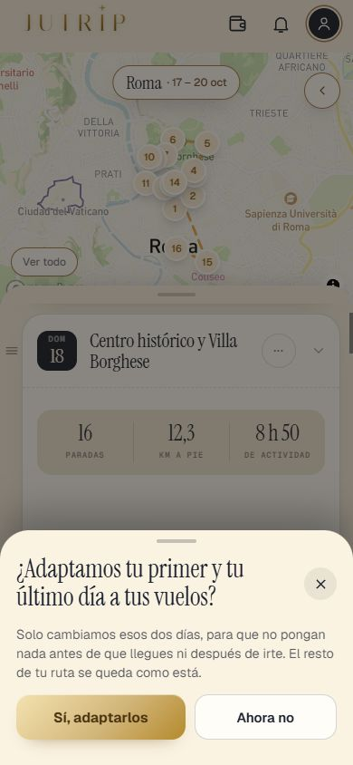
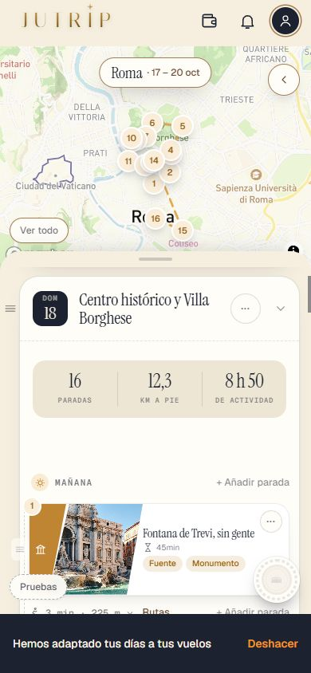
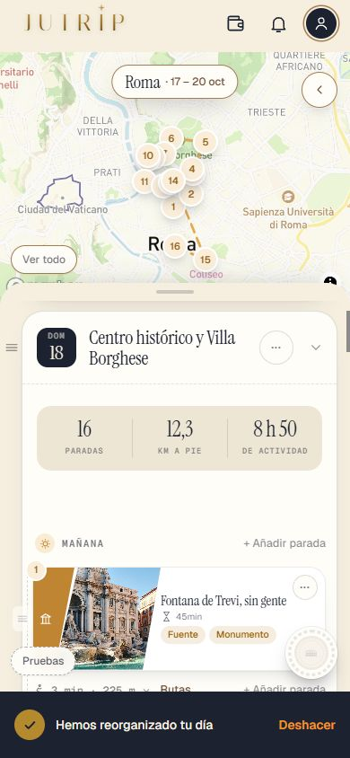
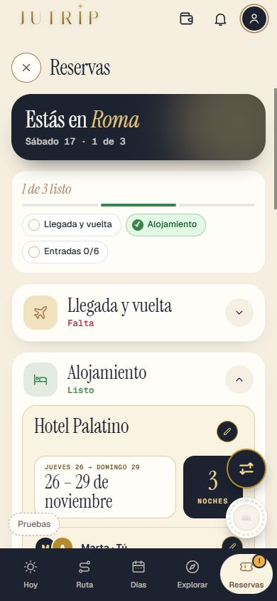

Repaso de la Tanda 10S7b
La batería de pruebas en 0 fallos de una pasada (tres veces seguidas y en 35 minutos), la descarga más ligera, las zonas de toque de 44 px y los retoques de la 10N12. Marca cada punto en tu teléfono cuando lo hayas comprobado (se guarda en este navegador).
0 · Antes de empezar ✅ Hecho — Prompt guardado, sin migraciones, nota de estado cada 30 minutosMotor: no se ha tocado nada (server/ ni shared/). Se usa el /api/rebuild-day que ya existía. Dónde: No es de móvil. 1 · Los vuelos ✅ Hecho — Lo que solo informa (plan de llegada y de vuelta, «Hoy vuelves a casa», resumen del vuelo, textos de la hora) se actualiza solo, siempre, con y sin pase, sin mover paradasLa tarjeta «Hoy vuelves a casa» solo se pinta con pase (así estaba). El plan de llegada sale del motor sin conservar el orden y puede decir «la Roma antigua pasa al día 2» cuando la ruta no se ha reordenado. Dónde: RESERVAS > poner o cambiar la hora del vuelo; ficha de llegada y último día. ⚠️ A medias — Con pase, al guardar o cambiar el vuelo, si adaptar el primer o el último día cambiaría algo: alerta «¿Adaptamos tu primer y tu último día a tus vuelos?» con [Sí, adaptarlos] y [Ahora no]; si no cambiaría nada, no sale; en viaje compartido solo a quien lo cambióEn el viaje compartido la alerta vive en la pantalla de quien guarda el vuelo (por diseño); no se probó con dos cuentas. Dónde: Cuenta con pase: cambia la llegada a las 21:40 en RESERVAS. 
⚠️ A medias — «Sí» cambia solo el día de llegada y el de vuelta, nunca la ruta entera, con la franja «Hemos adaptado tus días a tus vuelos» y Deshacer; «Ahora no» no cambia nada y deja el botón «Reorganizar» en esos dos díasLO IMPORTANTE: el motor NO sabe adaptar solo el primer día a la llegada (pidiéndole el día 1 con llegada a las 16:30 reordena toda la ruta: «el D1 pasa al día 2» y se cae Villa Borghese). Sin tocar el motor, hice lo siguiente: PRIMER día se recorta en el cliente —lo que empieza antes de llegada + tiempo hasta el centro pasa a «Si te sobra tiempo»: no se pierde nada ni se reajustan horas—; ÚLTIMO día de ciudad solo se recorta si no hay día de vuelta —lo que acaba tras la hora del vuelo menos salir antes—; DÍA DE VUELTA sí se rehace con el motor (/api/rebuild-day con orden fijo; con 20:00 pasa de vacío a 5 paradas). Si quieres la adaptación completa de la llegada hay que añadir al motor una petición «adaptar solo el día 1» sin reordenar. La zona del alojamiento solo repone planes, sin alerta. Dónde: Alerta > [Sí, adaptarlos] / [Ahora no]. 
✅ Hecho — El botón «Reorganizar» mira el vuelo en el primer y el último día: nada antes de la llegada (más el tiempo hasta la ciudad) ni después de la hora de irse al aeropuertoDónde: Día 1 con la llegada tarde > Reorganizar. 
2 · Los cierres en «Reorganizar» ✅ Hecho — Apuntado como pendiente antes del lanzamiento: «Reorganizar» no puede poner un sitio a una hora en que ese día está cerradoEn docs/dias/PENDIENTES_ANTES_DEL_LANZAMIENTO.md (nuevo) y en REGLAS_DE_LA_APP.md. Dónde: No es de móvil. 3 · La lista del pase ✅ Hecho — Frase «Ordenamos tus días según tu llegada, tu vuelta y los cierres de los monumentos.»Ya estaba así desde la 10S7. Dónde: Hoja de la lista del pase. 4 · «Empezar de cero» ✅ Hecho — Diálogo sin «el día de prueba» y con «Las pruebas gratis que ya has usado no vuelven.»; «Reiniciar mis pruebas» se queda como estáTexto: «Se borrará todo lo de tu cuenta: viajes, reservas, fotos, logros, experiencia y los pases. La cuenta se queda. Las pruebas gratis que ya has usado no vuelven. ¿Seguro?». Cambiada también la explicación de encima del botón. pruebaTanda10J al día. Dónde: Perfil > panel de administrador > Empezar de cero. 5 · Lectura de una entrada y de un hotel ⚠️ A medias — La pruebas tú con una realPendiente tuyo: las pruebas usan una IA de mentira. Dónde: RESERVAS > Añadir tu entrada / Añadir tu reserva. 6 · La reserva del hotel en un viaje compartido ✅ Hecho — Nombre, dirección, fechas, horas y teléfono los ve todo el viaje; el localizador solo quien lo añadióSin migración: el localizador va al documento privado de billetes_personales (0070). El documento no existe como archivo: la reserva solo guarda datos, no PDF ni foto. Un viaje antiguo con localizador dentro de la reserva compartida lo pasa a lo privado el administrador. «Empezar de cero» ya lo borra (0071). Dónde: Dos cuentas en un viaje compartido: RESERVAS > Alojamiento. 
7 · Iluminar ⚠️ A medias — Ilumina la parada cuando una reserva trae el Free Tour o una entrada de otro día; el «+» de la franja y el del hueco entre tarjetas siguen como «entre dos paradas»Probado con el almacén y el código, no en el móvil. Si el sitio ya estaba en el día de la fecha de la reserva no se ilumina (no cambia de día); una reserva grande que mueve el día entero se reordena después con el motor y esa parada no se ilumina. Dónde: RESERVAS > Free Tour con fecha de otro día > Guardar. 8 · Las reservas ✅ Hecho — Una reserva grande en otra fecha sigue moviendo el día entero (regla 6j); quitar una reserva no rehace nada: se quita su hora y su billete y la parada se queda donde estáQuitar la reserva solo quita la reserva, la marca de hora fijada, sus avisos y, en ruta a mano, la parada del Free Tour como antes. Dónde: RESERVAS > una entrada reservada > Cambiar > Eliminar reserva; mira DÍAS. 9 · La prueba ✅ Hecho — pruebaTanda10S7b (U, V, W), pruebaTanda10J y pruebaJutrip, más las antiguas tocadasSin migraciones. Dónde: No es de móvil. Todas las capturas
10s_aviso_375x667 10s_cama_dia_de_prueba 10s_lista_x_375_final 10s_lista_x_final 10s_lista_x_medio 10s_mis_viajes_fechas 10s_toque_ajustes_antes 10s_toque_ajustes_despues 10s_toque_cama_antes 10s_toque_cama_despues